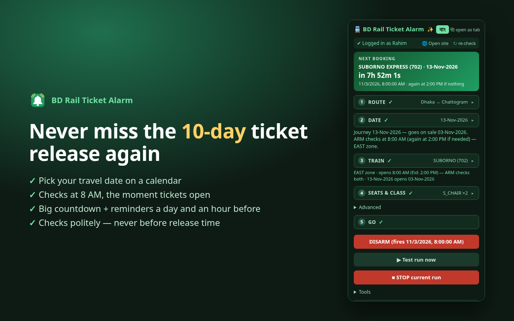
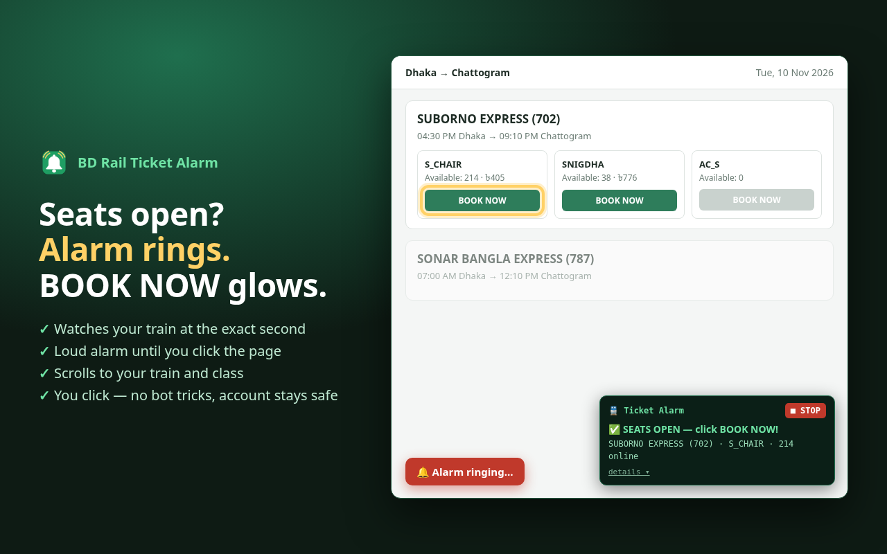
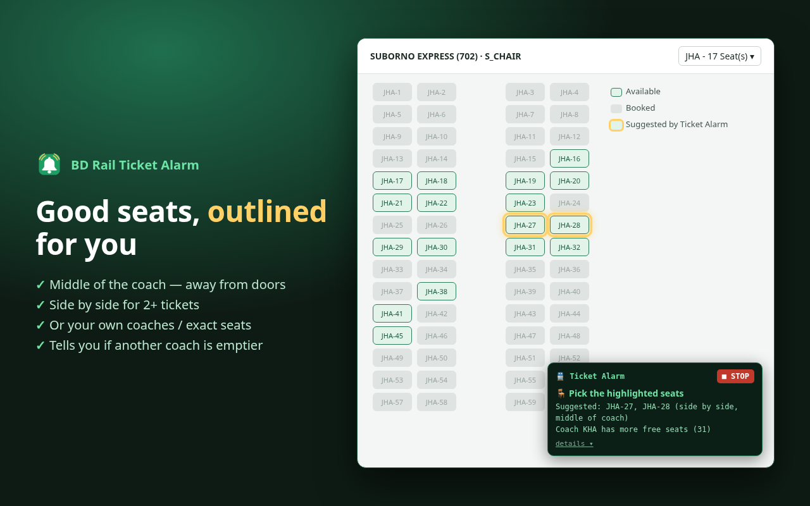

What it does
📅 Pick a travel date
Tap your journey date on a calendar. It works out the opening day (10 days before) and checks at 12 AM, then again at the train's zone time (8 AM or 2 PM) if needed.
⏱️ Counts down
A big countdown card, plus reminders a day before and an hour before.
🔔 Rings when seats open
At the release second it checks for your train. The moment your class has online seats, a loud alarm rings.
✨ Lights up BOOK NOW
The page jumps to your train and its BOOK NOW button glows yellow.
🪑 Outlines good seats
In the seat map it outlines seats in the middle of the coach, side by side if you need two or more.
🛡️ Gentle on the server
About one check per second, only after release, stops early, slows down when asked. Never touches the bot check.



What you need
- A computer with Brave or Google Chrome (or another Chromium browser like Edge). Phones are not supported.
- An account on eticket.railway.gov.bd, logged in on that browser.
- The browser open and the computer awake at release time — the extension can't wake a sleeping computer.
Install
It takes about two minutes. You install it straight from GitHub using the browser's Developer mode — that's normal for extensions that aren't in the Web Store, and nothing is sent anywhere.
- Download bd-rail-ticket-alarm-main.zip and unzip it
(right-click → Extract here). Put the folder somewhere permanent, like
Documents. - Open
brave://extensionsin Brave, orchrome://extensionsin Chrome. - Turn on Developer mode (switch at the top-right).
- Press Load unpacked and choose the
shohoz-autobookfolder insidebd-rail-ticket-alarm-main— it's the one withmanifest.jsonin it. - Click the puzzle-piece icon in the toolbar and pin BD Rail Ticket Alarm. Click the 🔔 to open the panel.
Updating to a new version
- Download the zip again and unzip it.
- Copy the new files over the old
shohoz-autobookfolder (same place, replace all). - At
brave://extensions, press ↻ on the extension's card. Your settings and saved trips stay.
Re-check that ARM is still red after updating — reloading can clear a pending alarm.
Chrome Web Store
A Web Store version (with automatic updates) is planned but not available yet. Until then, use the steps above.
How to use
The panel has five numbered steps. A finished step folds to one line with a ✓ — tap it to open it again. The বাং button at the top switches the whole panel to Bangla.
- Log in. Press 🌐 Open site at the top of the panel — it opens eticket.railway.gov.bd for you (or jumps to the tab if it's already open). Log in there, and press I AGREE on the site's disclaimer banner once so it doesn't cover the page at release time. The panel shows a green ✓ when it sees you're logged in. (You always log in yourself — the extension never asks for your password.)
- Route. Type the From and To stations and pick them from the suggestions.
- Date. Tap your travel date. The line underneath says when those tickets go on sale.
- Train. The route's trains load by themselves once both stations are picked (press ⟳ Load trains to refresh). Pick yours — the list shows departure → arrival times, and days a train doesn't run, like “not on Wednesday”. The check times are set for you: 12 AM on the opening day, then the train's zone time (WEST 8 AM, EAST 2 PM).
- Seats & class. Choose the class (for example
S_CHAIR), how many seats (1–4), and optionally preferred coaches (THA,TA) or exact seats (THA-21,THA-22). - ARM. Press ARM. The button turns red and a green card counts down. You can close the panel now.
What happens at release time
| When | What happens |
|---|---|
| 1 day before | Reminder notification: “Tickets open tomorrow”. |
| 1 hour before | Reminder notification. Check you're logged in. |
| ~75 seconds before | A eticket.railway.gov.bd tab opens with a small status box at the bottom-right. |
| 12:00 AM on the opening day | It starts checking for your train, about once a second, for up to 5 minutes. |
| Zone time (8 AM / 2 PM) | Only if the 12 AM check found nothing: the same check runs again. If seats were found at 12 AM, this is cancelled. |
| Seats appear | 🔔 Alarm + notification. The page reloads, scrolls to your train, and your class's BOOK NOW glows. |
| You click BOOK NOW | The seat map opens with the best seats outlined. If another coach has more free seats, the status box says which. |
| You finish | Click the outlined seats → CONTINUE PURCHASE → OTP → payment. |
Click anywhere on the page to stop the alarm. Press ■ STOP (in the panel or on the page) to stop everything.
Each check lasts up to 5 minutes (changeable under Advanced). If the 12 AM check finds nothing, the notification says when it will check again — leave the computer on.
How it chooses seats to outline
- Your exact seats, if you typed some and they're free.
- Your preferred coaches, in the order you typed them.
- Otherwise the middle part of the coach — away from doors, toilets and wheels.
- For 2 or more tickets, seats next to each other, as close to the middle as possible.
It only outlines. You do the clicking, so you can always pick something else.
Staying safe from blocks
If a computer asks the ticket server for data too often, the server answers “You are requesting too frequently” and blocks it for a while. The extension is built to stay well inside normal use:
- Nothing before release time. If your date isn't on sale yet, it refuses to start instead of checking for nothing.
- About one check per second, only for a few minutes, and it stops the moment your seats appear.
- Slows down when told to — waits 2, 4, 8, then 15 seconds.
- Never touches the seat map's bot check (the “are you human?” check). You open the seat map yourself.
- Never logs in for you and never fills in OTP or payment.
Your part: don't run tests again and again on dates that aren't on sale, and use one computer per trip. Want the details? Read How it works.
If something goes wrong
| Problem | What to do |
|---|---|
| “You are requesting too frequently” | Press ■ STOP, close the tab, wait 15–30 minutes. |
| Red ✖ not logged in | Log in at eticket.railway.gov.bd, then press ↻ re-check. If you used train.shohoz.com before: logins don't carry over between the two sites, so log in once on eticket.railway.gov.bd. |
| “Session expired” in the status box | Log in again. The alarm rings so you notice. |
| No trains in the list | Open eticket.railway.gov.bd in a tab, log in, then press ⟳ Load trains. |
| No sound | Tools → 🔔 Test alarm sound. Check the computer volume and that the browser isn't muted. |
| No notifications | Allow notifications for the browser in your computer's settings, and turn off Do Not Disturb. |
| Changed train or date after arming | Press ARM to cancel, then ARM again. |
| BOOK NOW didn't glow | The site may have changed its layout. Scroll to your train yourself and please report it. |
Questions
Does it buy the ticket for me?
No. It finds the moment seats open, alerts you and points at the right buttons. Choosing seats, OTP and payment are always yours.
Why doesn't it pick the seats itself?
The site protects the seat map with a bot check. Getting around it would break the site's rules and put your account at risk, so the extension deliberately leaves that step to you.
Does it know my password?
No. You log in on the website yourself. The extension only uses the login session the website already keeps in your browser, and only to talk to the ticket website. See Privacy.
Does it guarantee a ticket?
No. Popular trains sell out in seconds and thousands of people try at once. It saves you the seconds of noticing and finding your train — the rest depends on you and on luck.
Can I watch several trains or dates?
One trip per ARM. Use Saved trips to switch quickly.
Does it work on a phone?
No — mobile browsers don't run these extensions.